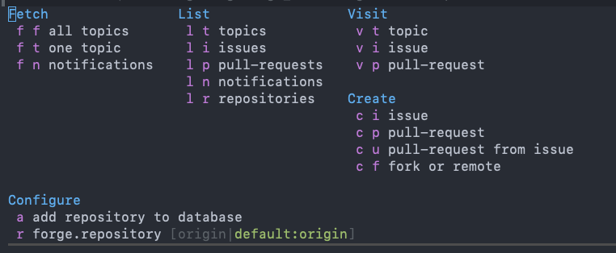
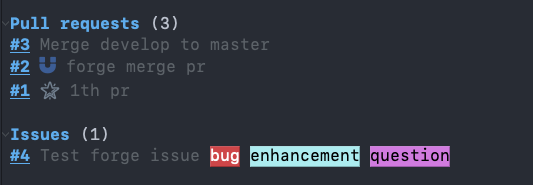

使用Forge管理GitHub Issue
文章目录
前言
在Emacs中使用Forge管理GitHub Pull Request中，我聊到了在 Emacs 中使用 Forge 管理 GitHub Pull Request ，今天来讲一讲怎么管理 GitHub Issue 。
使用
使用之前需要配置 GitHub 相关信息，在Emacs中使用Forge管理GitHub Pull Request中有说过，不了解的可以前往查看，这里不再赘述。
Forge 是集成在 Magit 中的，所以可以在 Magit Status buffer 中使用 @ 打开 Forge 菜单，这是使用 Forge 的入口。

把仓库加入 Forge 数据库
在使用之前需要让 Froge 识别到你的仓库，所以使用之前要通过 Forge 菜单把仓库管理起来。
使用 @ 打开 menu 之后，按下 a ，默认会把当前仓库的远程 URL 加入 Forge 数据库。
拉取topics
先来解释一下 topics ，它包括了 Pull Request 和 Issue 。
在 Forge 中使用快快捷键 @ f f 来拉取所有的 Pull Request 和 Issue 。
拉取成功之后你就会在 Magit Status buffer 中看到 Pull Request 和 Issue 这两个标题。

查看 Issues 列表
有些时候我们只想看 Issue 这时候你可以使用 @ l i 打开一个新的 buffer 查看
在 buffer 中使用 o 可以在浏览器中打开这个 Issue 。
创建 Issue
讲完了怎么浏览 Issue ，我们就来了解怎么创建 Issue 。
我们回到 Magit Status buffer 按下 @ c i 创建一个 Issue ，你可以使用 markdown 的语法来编写。
|
|
使用 #数字 可以关联对应的 Issue ，编写完成后使用 C-c C-c 来完成创建， Forge 会自动把 Issue 推到 GitHub 。
编辑 Issue
我们创建好 Issue 之后发现有些地方写的不对，需要更改，这时候就需要按下回车键进入 Issue 详情页，然后才能进行更改。
编辑 Issue 主要编辑 Title 、 State 、 Label 、 Assignees 和 comment ，我们一一说明如何操作。
创建 comment
在 Issue 详情可以通过 C-c C-n 来创建 comment ，这里也是支持 markdown 的。使用 C-c C-c 完成编写，如果你不想要了，使用 C-c C-k 取消这次编写即可。
删除 Commnet
如果你发现有一条 comment 你不想要了可以使用 C-c C-k 来删除这条 comment 。似乎在 GitHub 上好像还没有删除这个功能。
编辑Label
讲完了如何创建、删除和评论 Issue ，接下来讲设置 Issue 的 Label 。
同样要进入 Issue 详情页，我们把光标移动到 Label 上，按下 C-c C-e ，然后在 minibuffer 中输入标签，可以使用 TAB 补全。多个用 ， 分割。
常用标签有 bug 、 documentation 、 duplicate 、 enhancement 、 good first Issue 、 help wanted 、 invalid 、 question 这些，你也可以自定义。
编辑完之后如下所示
编辑 Assignees
在开发中你可能需要把一个功能指派给别人做，你自己没时间，这时候就需要使用 Assignees 来指派给其他人。
在 Issue 详情也中编辑 Assignees 和 编辑 Label 一样，也是使用 C-c C-e 进行编辑，然后输入开发者的名字，也是可以用 TAB 补全。
Close Issue
当 Issue 开发完了就需要进行关闭，这时候也需要来到 Issue 详情页，在 State 中按下 C-c C-e ，然后在 minibuffer 中输入 y 表示确认关闭，这样就把 Issue 关闭了。
 关闭后状态就会变成
关闭后状态就会变成 close
 关闭之后可以用同样的方式来再次打开，这里就不再赘述了。
关闭之后可以用同样的方式来再次打开，这里就不再赘述了。
改变标题
改变 Issue 标题这个需求一般来说不那么重要，我们简单说一下，还是和前面的编辑一样使用 C-c C-e 进行编辑，改完回车就完事了。